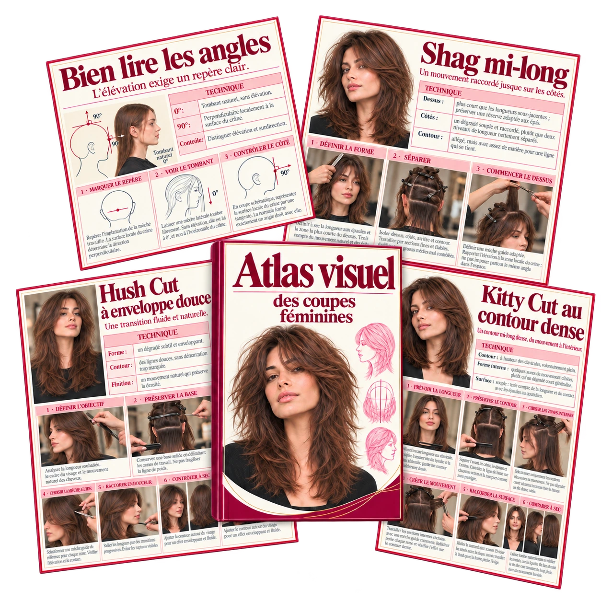
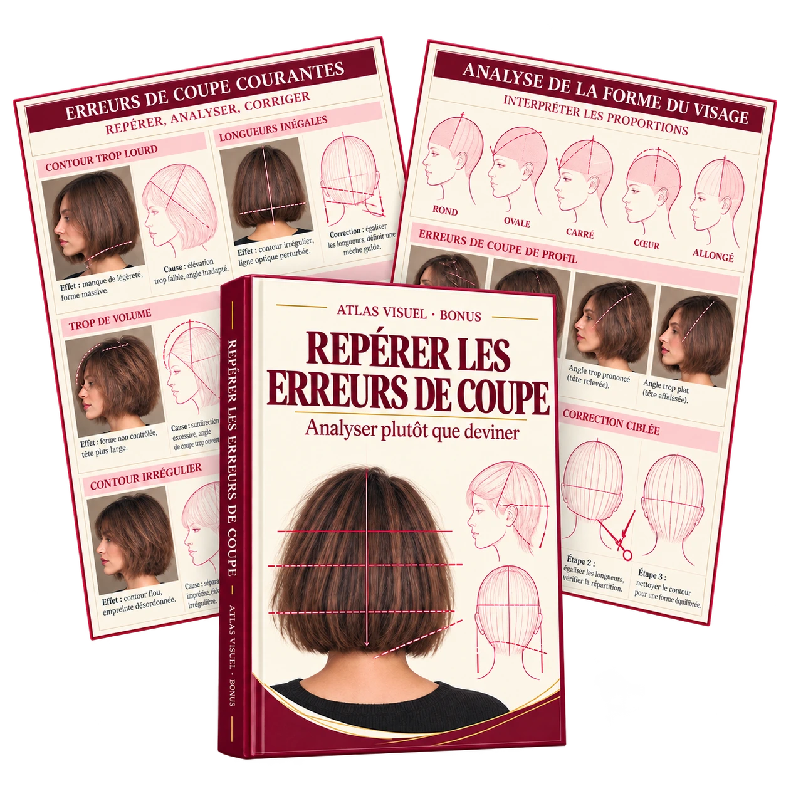
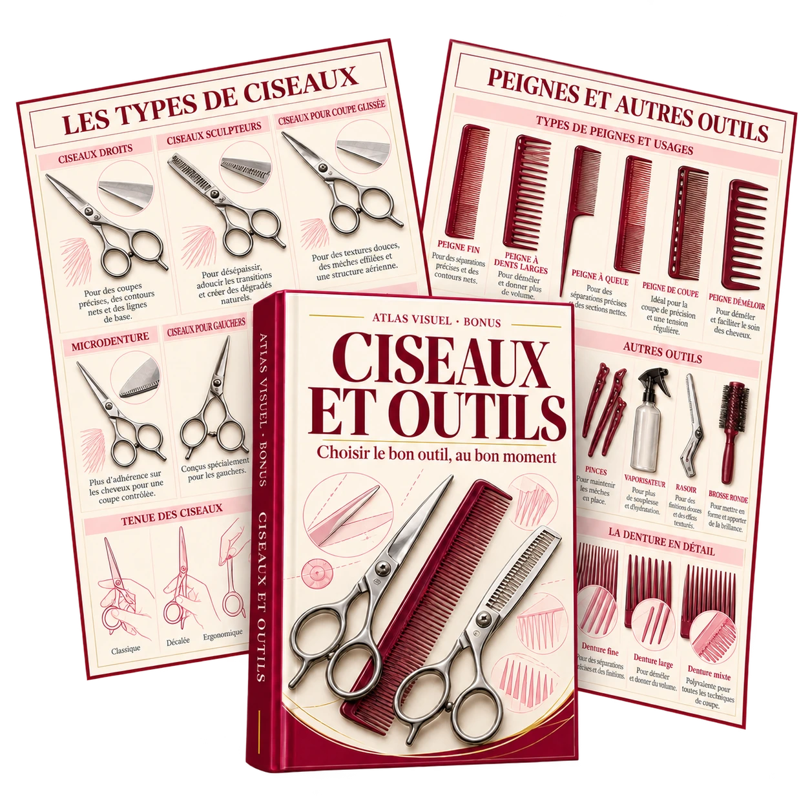

Avant le rendez-vous
Analyser le style souhaité et visualiser mentalement les étapes de la coupe.
Retrouvez les séparations, les angles et les mèches guides en quelques secondes, plutôt que de chercher dans de longues vidéos en plein rendez-vous.

Révisez vos repères : par où commencer la coupe ? Comment diriger la mèche ? Quel point vérifier à l’étape suivante ?
✓ Bases techniques et formes de coupe
✓ Cheveux courts, mi-longs et longs
✓ Séparations et mèches guides
✓ Texture, dégradé et mouvement
Numérique · En français · Pour les professionnels
Votre cliente souhaite un style qui sort de votre routine. Vous aimeriez revoir le déroulement de la coupe.
Vous vous souvenez d’une bonne explication, mais plus du passage où la mèche guide essentielle était montrée.
Angle d’élévation, surdirection ou répartition des masses : vous avez parfois besoin de vérifier un point précis.
Les techniques familières viennent naturellement. Pour explorer d’autres variantes, une préparation claire fait la différence.
Après une coupe, vous souhaitez comprendre comment la direction et les angles ont influencé la forme.
Revoyez les étapes essentielles avant le rendez-vous, plutôt que de vous fier uniquement à votre mémoire.
Séparation, angle et direction sont présentés ensemble pour mieux comprendre leurs liens.
Appuyez-vous sur les illustrations pour vérifier votre plan de coupe et repérer les sources d’erreur possibles.
Explorez différentes formes de coupe et adaptez-les à la nature du cheveu ainsi qu’aux attentes de votre cliente.
Un complément synthétique à l’expérience pratique, à la formation initiale et à la formation continue.
Les thèmes complémentaires du pack original, adaptés en français pour une utilisation claire au salon.
Formes de franges, proportions et raccord avec le reste de la coiffure : les points essentiels.
Inclus dans le pack
Analyser les irrégularités courantes et comprendre leurs causes possibles.
Inclus dans le pack
Identifier les outils, leurs usages et leur effet sur le résultat de la coupe.
Inclus dans le packRaccorder les dégradés et comprendre la répartition des longueurs et des masses.
Inclus dans le packPrendre les proportions du visage comme repères, sans négliger la nature du cheveu ni le style personnel.
Inclus dans le packAnalyser le style souhaité et visualiser mentalement les étapes de la coupe.
Vérifier un détail précis et l’adapter à la chevelure que vous avez devant vous.
Revoir les principes techniques et prendre du recul sur sa pratique.
Exemples d’utilisation, et non avis clients ou promesses de résultats.
Prix du pack
Atlas principal et 5 guides bonus inclus
19,99 €
TVA incluse pour la France
Paiement unique · Aucun abonnement
Obtenir mon Atlas visuelCe produit bénéficie d’une garantie de remboursement de 7 jours sur Hotmart. Consultez les modalités applicables à votre achat sur la plateforme.
Cette garantie ne limite pas vos droits légaux. Les conditions applicables et les coordonnées de contact sont à consulter sur Hotmart.
Après l’ouverture des ventes, l’accès aux documents est prévu par e-mail.
Vérifiez toutes les informations sur la page de paiement, puis finalisez votre achat.
L’accès est prévu par e-mail. Vous pourrez ensuite enregistrer les fichiers sur votre appareil.
Consultez les contenus sur smartphone, tablette ou ordinateur. Appuyez-vous sur votre savoir-faire pour les appliquer et les adapter à chaque situation.
Aux coiffeuses et coiffeurs, ainsi qu’aux apprentis encadrés par un professionnel. Il suppose des connaissances de base en coupe et ne remplace ni une formation ni un apprentissage pratique.
Non. L’Atlas visuel est conçu comme un ouvrage de référence numérique et illustré. Ce n’est ni une formation certifiante ni un cours accompagné.
Elles présentent quatre pages du contenu français : Bien lire les angles, Shag mi-long, Hush Cut à enveloppe douce et Kitty Cut au contour dense. Ces extraits ne constituent pas une validation professionnelle indépendante ni une présentation exhaustive de tous les fichiers du pack.
Le support couvre les bases, les formes de coupe pour cheveux courts, mi-longs et longs, ainsi que la texture et le mouvement. Le contenu français définitif et la liste des fichiers seront précisés avant l’ouverture des ventes.
Les documents numériques sont prévus pour smartphone, tablette et ordinateur. Les pages de démonstration présentées ici peuvent être agrandies. Aucun livre physique n’est envoyé.
Oui. Le prix du pack pour la France est de 19,99 €, en un seul paiement et sans abonnement. Vous retrouvez le récapitulatif du montant sur la page de paiement Hotmart avant de confirmer votre achat.
Le produit indique une garantie de remboursement de 7 jours sur Hotmart. Consultez les modalités et le contact associés à votre achat sur la plateforme. Vos droits légaux restent inchangés.